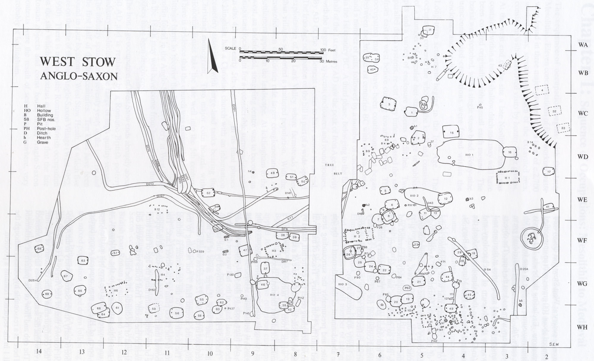
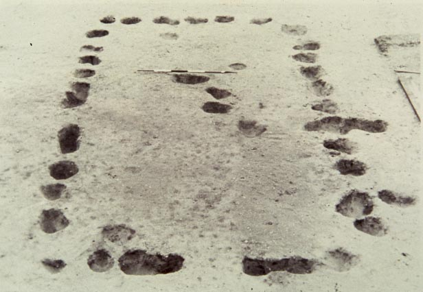
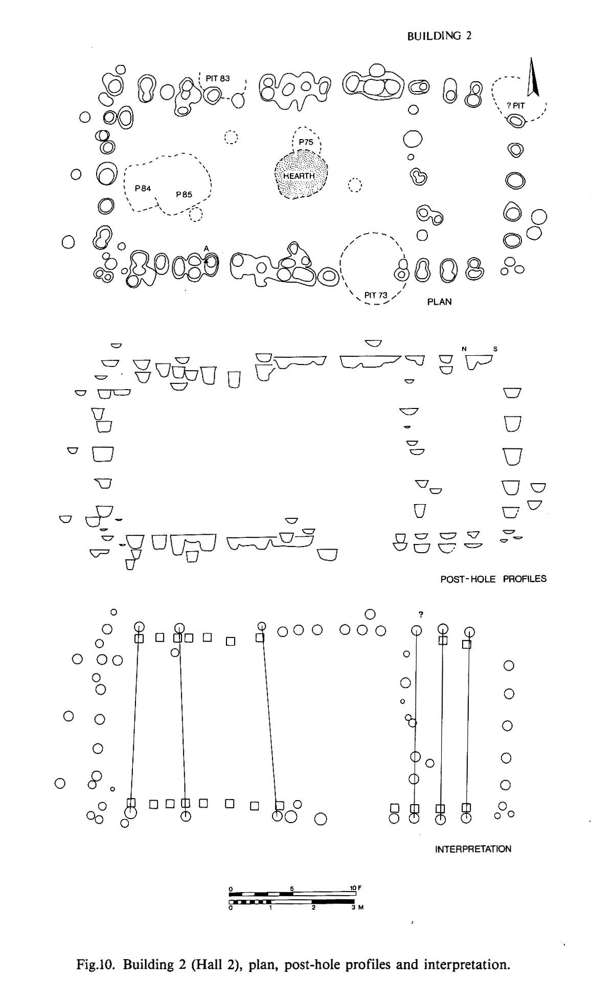
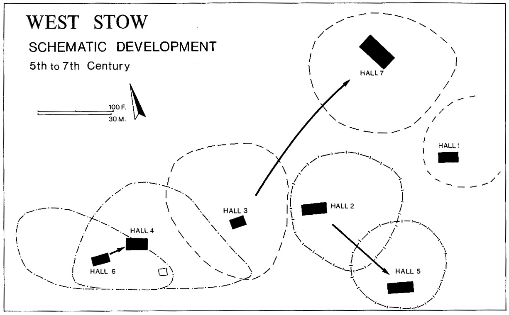
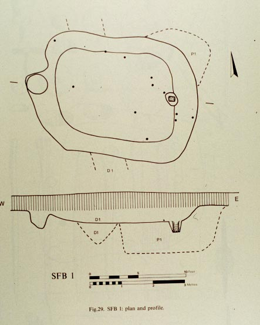
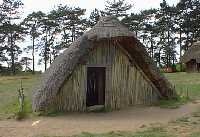
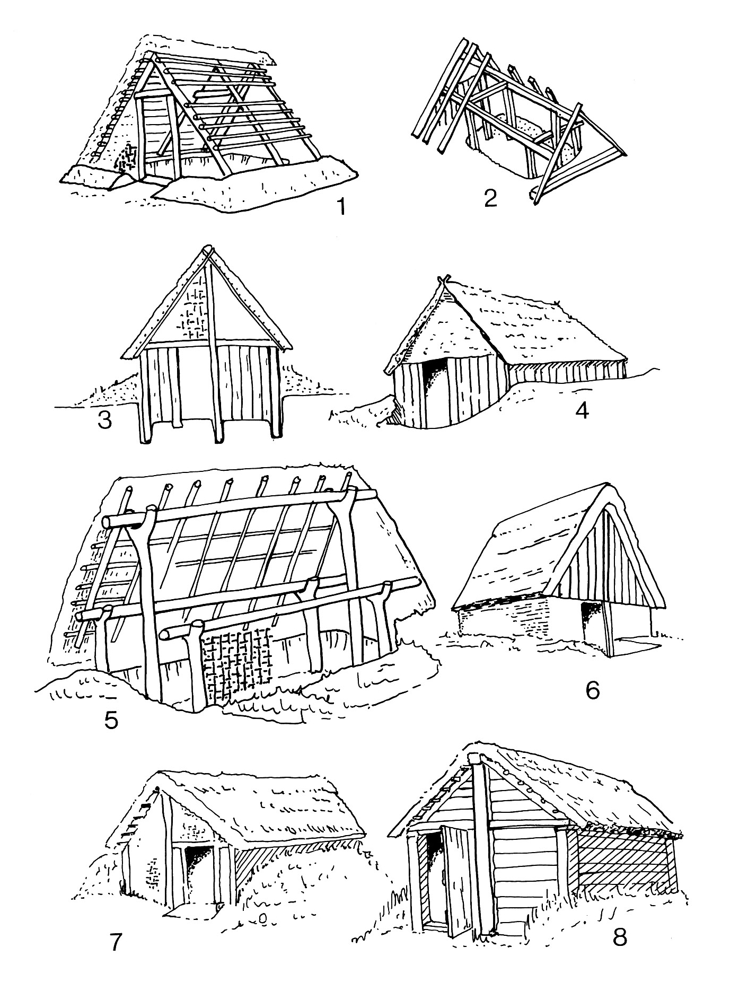
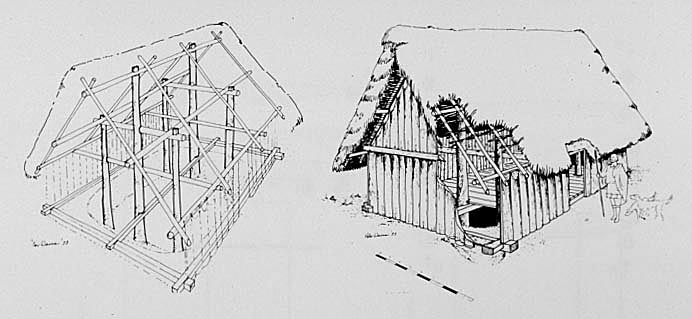

In the village, the archaeologists found the remains of many buildings, pits, and ditches, as seen on this diagram.

It should be noted that no remains of any building material was found; all that survived was the traces of where wooden posts had been placed in the ground as supports of the buildings (post-holes). It is from the arrangment of the postholes, their size and the angles that the posts had been placed in the ground, that the archaeologists are able to reconstruct what the buildings may have looked like.
| The buildings included seven 'halls', or large rectangular buildings, most of which
contained
a single room.  |
 |
| These halls were not all occupied at the same time, indeed some seem to have been built as others went out of use (from hall 6 to hall 4, from hall 2 to hall 5, from hall 3 to hall 7), so that at any given time there seem to have been about three functioning halls with associated buildings. The community probably consisted of three or four extended families, with associated slaves (maybe 40-60 people total). There was no especially visible ranking within the village, in terms of house size or richer material remains in any one of the houses, although some of the halls were slightly larger than others, and some of the burials contained more grave goods than others. |  |
| Seventy 'sunken huts', or small structures built over a flat-bottomed pit or hollow, with postholes supporting the superstructure. These huts, often known as 'sunken-featured buildings' (SFB's) or "grubenhäuser", are found all over continental Europe, especially in areas where Germanic people went in the fourth and fifth centuries. Their reconstruction has been controversial. |
 |
It used to be thought that the activity in the hut took place on the floor of the pit, thus semi-underground.
 A reconstructed example of a semi-underground hut |
 |
| Based on evidence from West Stow, in which evidence of floors above the pits was found, it was shown that actually the SFB's were probably built with wooden floors over the pits (which were perhaps used for storage). |  |
| Several of the SFB's contained material for specialized craft manufacture, such as loom-weights or spindle-whorls, both of which were used for spinning and weaving. Some contained hearths, indicating their use in cooking or metalworking, or perhaps just for heat. | |
In general, a hall was often associated with several SFB's that surrounded it. This suggests that the hall was the central building for a family unit, the main living area, with a hearth perhaps used for cooking, and the SFB's were the associated craft houses, and perhaps sleeping quarters, especially for slaves.
On the site, there were also found some hollowed out areas in the ground, which were full of remains such as pottery fragments, coins, metal pieces, etc. It has been suggested that they were animal pens (for which the fencing has disappeared).
A number of pits and ditches were also found on the site.